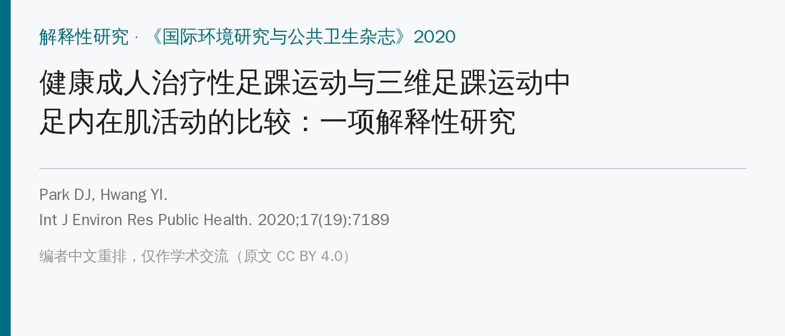
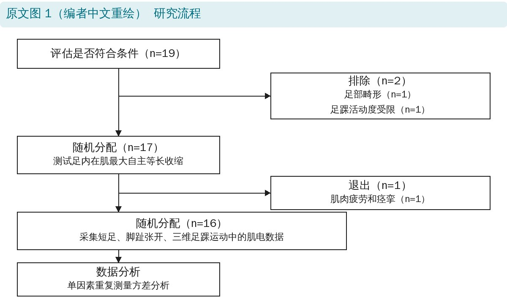
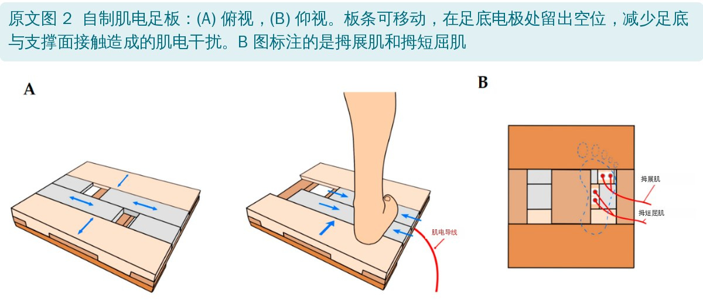
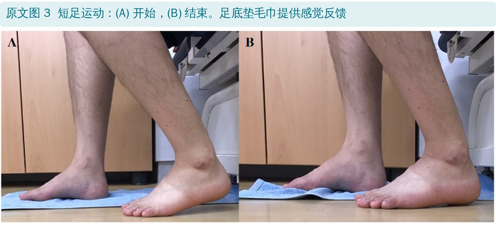
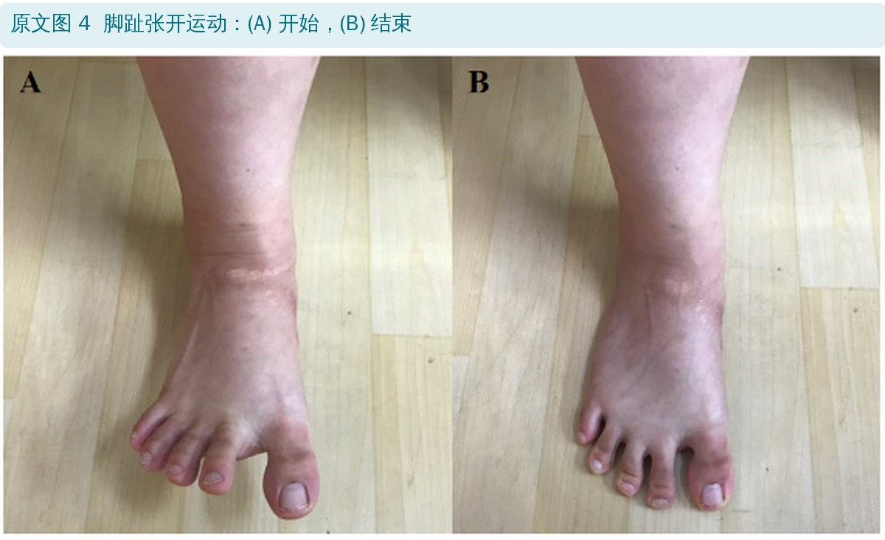
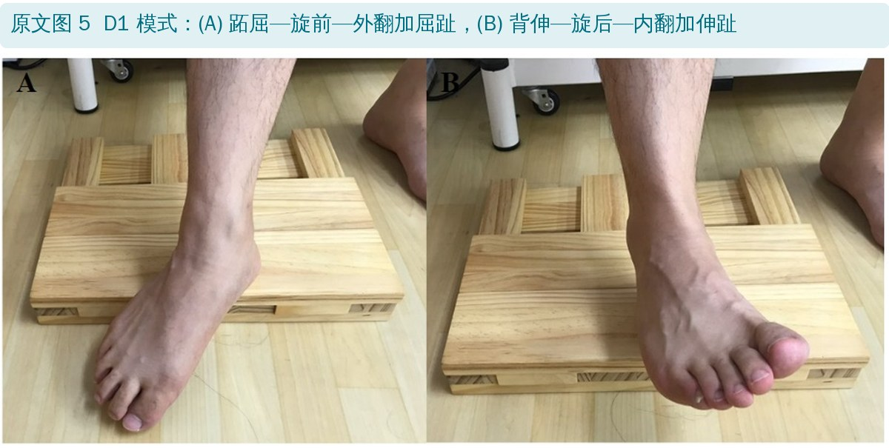
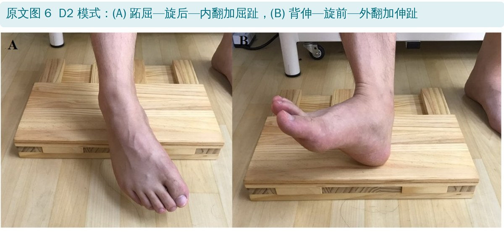
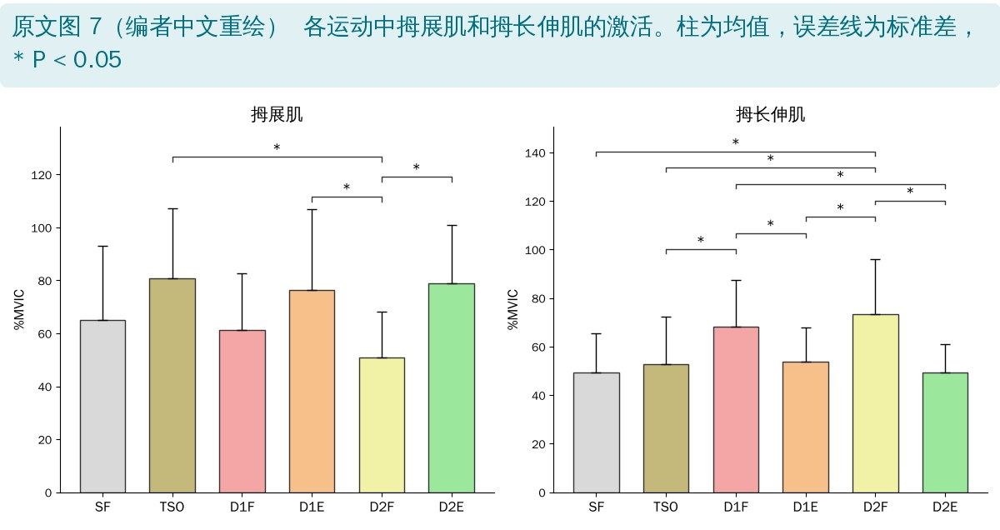
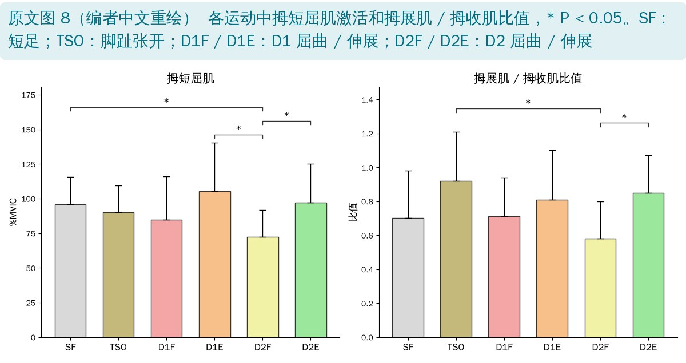

🔖原文信息（编者中文重排）
📚 文献信息
▪ Park DJ, Hwang YI. Comparison of the Intrinsic Foot Muscle Activities between Therapeutic and Three-Dimensional Foot-Ankle Exercises in Healthy Adults: An Explanatory Study. Int J Environ Res Public Health. 2020;17(19):7189. doi:10.3390/ijerph17197189
▪ 作者单位：韩国釜山天主教大学产业保健系、湖西大学物理治疗系
▪ 研究类型：表面肌电研究，16 名健康成人，每人做 6 种足踝运动
足内在肌是足的“局部稳定肌”：力臂短，为足弓提供动态稳定，也提供感觉输入；它的无力与足底筋膜炎、拇外翻、扁平足、踝扭伤和慢性踝关节不稳有关，老年人内在肌无力还会增加跌倒风险——拇展肌这类 Ⅱ 型纤维会随年龄萎缩。
临床最常用的两个内在肌练习是短足（SF）和脚趾张开（TSO）：短足能抬高内侧纵弓、改善平衡；脚趾张开能让拇展肌变厚。近年又有人提出用 PNF 下肢对角线模式里的三维踝足动作来练内在肌和外在肌，在扁平足、踝扭伤和足底筋膜炎病例中效果不错。这篇就把三维动作和两个经典动作放在一起，看哪块肌肉在哪个动作里更活跃。

🔖原文图 1：研究流程（编者中文重绘）
• 对象：20～30 岁、没练过足踝运动、近 3 个月没有踝损伤和疼痛的健康成人；19 人筛查，排除 2 人（足部畸形、活动度受限），1 人测试中因肌肉疲劳和痉挛退出，最终 16 人（男女各半，平均 27.4 岁）
• 训练：正式测试前先教 1 小时，通过动作考核才进入测试；6 个动作顺序随机
• 肌电：优势侧拇展肌、拇收肌、拇长伸肌、拇短屈肌；拇收肌和拇短屈肌用自制足板测，减少足底接触带来的干扰
• 每个动作做 3 次、每次 5 秒，取中间 3 秒；最后再测最大自主等长收缩（MVIC），把肌电标准化为 %MVIC
• 另外计算拇展肌 / 拇收肌比值：评价拇外翻时常用，比值越接近或超过 1，说明拇展肌越能“独立”于拇收肌发力

🔖原文图 2：自制肌电足板

🔖原文图 3：短足运动
• 短足（SF）：在部分负重下进行，由治疗师先带着被动做，再过渡到主动；目标是减少外在肌的过度参与、增加内在肌活动，让足变短、足弓抬起；足下垫毛巾提供感觉反馈

🔖原文图 4：脚趾张开运动
• 脚趾张开（TSO）：站立，先抬起脚跟和所有脚趾 → 把脚趾全部张开 → 脚跟着地 → 脚趾按小趾、大脚趾、其余脚趾的顺序依次落地 → 保持

🔖原文图 5：D1 模式

🔖原文图 6：D2 模式
• D1 屈曲（D1F）：从起始位开始，先做背伸—旋后—内翻加伸趾，再做跖屈—旋前—外翻加屈趾；动作从远端（脚趾）开始
• D1 伸展（D1E）：与 D1 屈曲方向相反
• D2 屈曲（D2F）：先做背伸—旋前—外翻加伸趾，再做跖屈—旋后—内翻加屈趾
• D2 伸展（D2E）：与 D2 屈曲方向相反
• 四个动作都在同一坐姿下完成，做向心收缩

🔖原文图 7：拇展肌和拇长伸肌的激活（编者中文重绘）

🔖原文图 8：拇短屈肌激活和拇展肌 / 拇收肌比值（编者中文重绘）
• 拇展肌：TSO（80.8%）、D2E（79.0%）、D1E（76.5%）最高，三者都显著高于 D2F（51.0%）；SF 为 65.1%，TSO 比 SF 高约 15% 但差异不显著
• 拇长伸肌：两个三维屈曲动作最高（D2F 73.2%、D1F 68.1%），显著高于其他动作
• 拇短屈肌：D1E（105.1%）、D2E（97.2%）、SF（96.0%）较高，都显著高于 D2F（72.3%）
• 拇展肌 / 拇收肌比值：TSO 最高（0.92），D2E（0.85）次之，两者都显著高于 D2F（0.58）
• 拇收肌：各动作之间没有显著差异（原文如此，见后文），都在 86%～93% MVIC
| 指标 | SF | TSO | D1F | D1E | D2F | D2E |
|---|---|---|---|---|---|---|
| 拇展肌（%MVIC）* | 65.06 ± 28.01 | 80.84 ± 26.33 | 61.41 ± 21.33 | 76.48 ± 30.40 | 51.00 ± 17.20 | 78.97 ± 22.00 |
| 拇收肌（%MVIC） | 92.36 ± 8.16 | 88.10 ± 7.66 | 86.18 ± 7.40 | 93.37 ± 10.49 | 88.95 ± 5.84 | 92.96 ± 8.17 |
| 拇长伸肌（%MVIC）* | 49.16 ± 16.44 | 52.92 ± 19.37 | 68.14 ± 19.37 | 53.75 ± 14.22 | 73.19 ± 22.83 | 49.35 ± 11.56 |
| 拇短屈肌（%MVIC）* | 95.96 ± 19.54 | 90.09 ± 19.40 | 84.58 ± 31.35 | 105.14 ± 35.15 | 72.28 ± 19.35 | 97.23 ± 27.97 |
| 拇展肌 / 拇收肌比值* | 0.70 ± 0.28 | 0.92 ± 0.29 | 0.71 ± 0.23 | 0.81 ± 0.29 | 0.58 ± 0.22 | 0.85 ± 0.22 |
原文表 2：各足部强化运动中四块肌肉的标准化肌电和拇展肌 / 拇收肌比值（n = 16）（中文翻译）
均值 ± 标准差。SF：短足；TSO：脚趾张开；D1F / D1E：D1 屈曲 / 伸展模式；D2F / D2E：D2 屈曲 / 伸展模式。* P < 0.05。
| 变量 | 均值 ± 标准差 |
|---|---|
| 年龄（岁） | 27.44 ± 2.58 |
| 身高（cm） | 166.19 ± 6.80 |
| 体重（kg） | 59.75 ± 9.54 |
| 体重指数（kg/m²） | 21.57 ± 2.62 |
| 性别 | 男 8 人（50%），女 8 人（50%） |
| 优势足 | 右 13 人（81.2%），左 3 人（18.8%） |
原文表 1：研究对象描述性统计（n = 16）（中文翻译）
作者结论：三维伸展动作在拇展肌、拇短屈肌激活和拇展肌 / 拇收肌比值上，与经典治疗性动作效果相当；三维屈曲动作则更能激活拇长伸肌。
• 只是健康年轻人的一次性肌电：肌电高不等于训练后肌肉变强，更不能直接推到扁平足、拇外翻患者
• 样本没达到计算要求：样本量计算需要 19 人，最终只有 16 人
• 足内在肌用表面肌电很难测准：这些肌肉小而深，相互挨得很近，串扰难以避免；拇收肌和拇短屈肌的 %MVIC 接近甚至超过 100%，作者也承认 MVIC 姿势可能诱发不出真正的最大收缩
• MVIC 放在最后测：做完 6 个动作再测，若肌肉已疲劳，MVIC 偏低，%MVIC 就会被高估
• 拇长伸肌是外在肌：题目说比较“足内在肌”，结果里却有一块外在肌
• 优点：三维动作和经典动作放在同一批人身上比较，方便临床挑选动作
• “短足的拇短屈肌最高”不对：讨论说短足的拇短屈肌活动最高，但表 2 中最高的是 D1E（105.14%），D2E（97.23%）也高于短足（95.96%）
• “短足和 D1E 平均都超过 105%”不对：短足只有 95.96%
• 拇收肌的 P 值可疑：F = 3.491（6 个动作、16 人，自由度 5, 75），未校正时 P ≈ 0.007，原文却写“P > 0.05、无显著差异”；即使做了球形校正，也很难超过 0.05
• 讨论说三维伸展动作“拇收肌活动高于其他动作”：结果部分刚说拇收肌各动作之间无差异
• 拇短屈肌电极位置写错：方法说拇长伸肌和拇短屈肌电极都贴在“内外踝连线上方三横指、胫骨嵴外侧”——那是小腿；拇短屈肌在足底。原文图 2 足板上画的拇短屈肌电极确实在足底
• 足板测哪块肌肉前后不一：正文说足板用于测拇收肌和拇短屈肌，图 2 标注的却是拇展肌和拇短屈肌
• 拇展肌电极位置自相矛盾：“内踝前缘”和“舟骨结节后方 1～2 cm”说的不是同一个位置
• 动作命名混乱：正文说 D1F 是先做背伸—旋后—内翻、再做跖屈—旋前—外翻（图 5A），而图 5A 的图注只写了跖屈—旋前—外翻；屈曲模式和伸展模式的起止位描述容易让人看反
• 人数描述不清：正文说“共选入 19 名受试者”，流程图显示其中 2 人被排除、1 人退出
• 文献引用错位：局限性部分讲表面肌电串扰时引用的文献 33，是拇外翻手术的研究
• 小错：“flexor braves”应为 brevis；局限性中“可用于腹部肌肉的方法”与本研究无关，像是从别处照搬
• 想练拇展肌（扁平足、拇外翻）：首选脚趾张开（TSO），D2E、D1E 这类三维伸展动作可以作为替代或进阶
• 拇外翻要看“独立性”：TSO 的拇展肌 / 拇收肌比值最高，更能让拇展肌单独发力；三维动作的拇收肌也很活跃，用于拇外翻要谨慎
• 短足仍是基础动作：拇短屈肌激活高，适合作为足核心训练的起点
• 三维屈曲动作偏练拇长伸肌，不适合作为内在肌的主要练习
• 教动作要花时间：本研究每人先练 1 小时、考核过关才测；临床上也要先教会、再加量
• 扁平足患者还可以借助三维伸展动作同时激活胫骨后肌（D2E）和腓骨长肌（D1E），这是作者的推测，本研究没有测
欢迎关注骨科康复小黄公众号，获取更多物理治疗的专业知识！
📄参考文献：
Park DJ, Hwang YI. Comparison of the Intrinsic Foot Muscle Activities between Therapeutic and Three-Dimensional Foot-Ankle Exercises in Healthy Adults: An Explanatory Study. Int J Environ Res Public Health. 2020;17(19):7189. doi:10.3390/ijerph17197189
原文以 CC BY 4.0 许可发表。本文为学术交流用的中文解读：原文图 1、7、8 按原意中文重绘，图 2 英文标注改为中文，图 3～6 原样引用并加中文图注，表 1、表 2 为中文翻译。